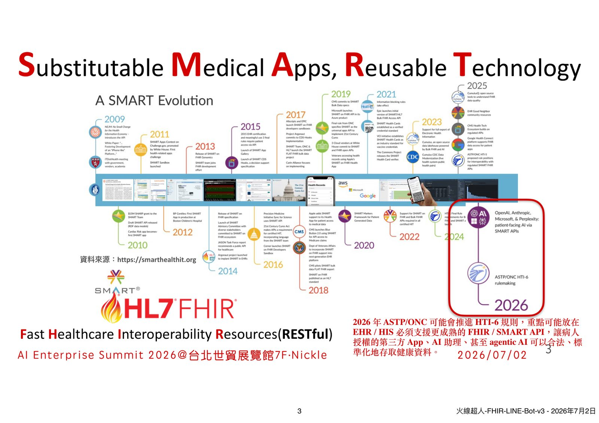
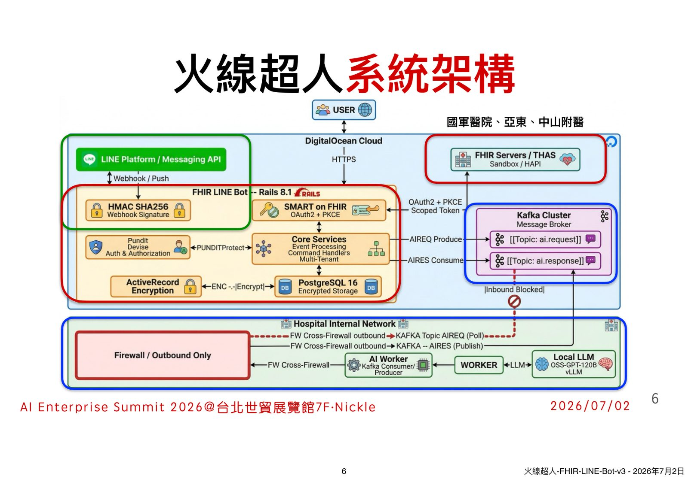
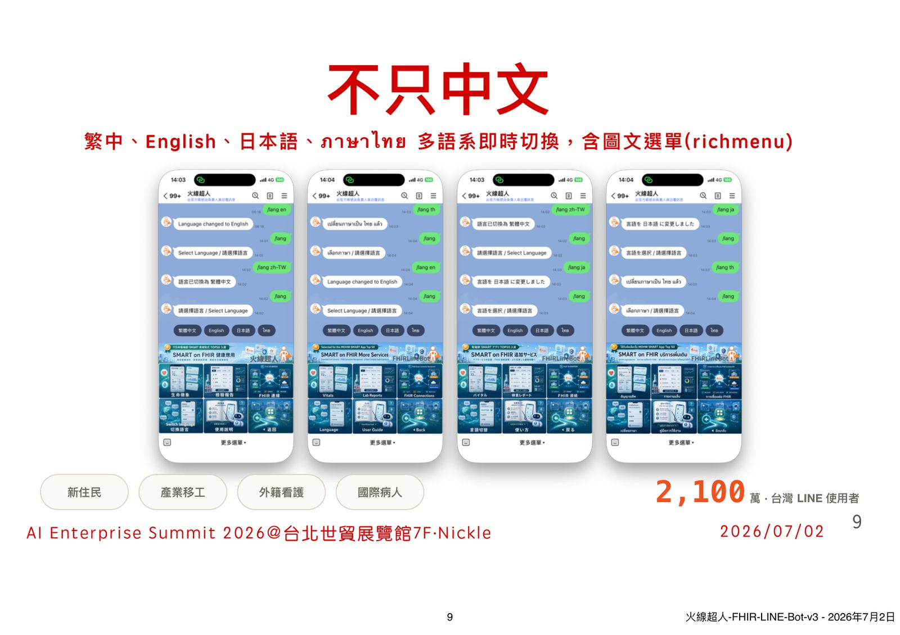
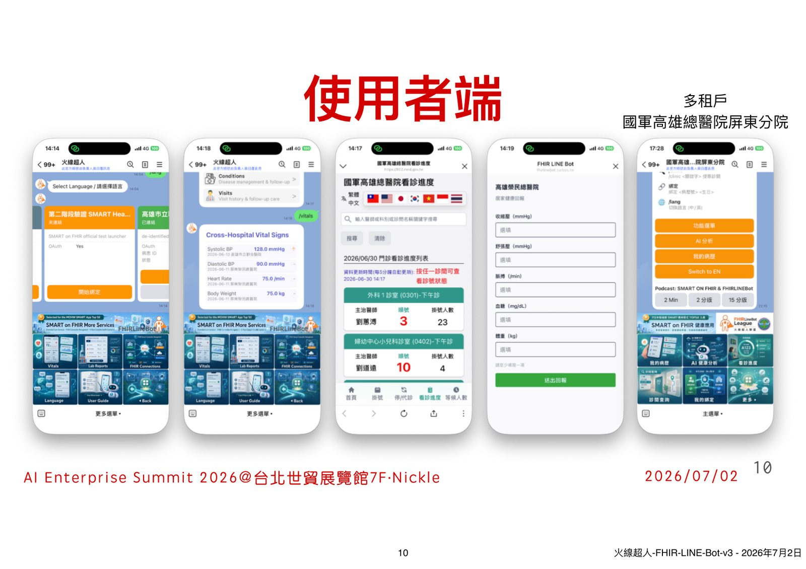

摘要
本講題以榮獲衛福部優良 SMART Apps 的「火線超人 FHIRLineBot」為例，探討如何解決傳統智慧醫療「僅留在醫院內部、民眾難以取得與理解自身健康數據」的痛點。該系統設計了隱私優先的五層技術架構：第一層為民眾使用的 LINE 介面；第二層透過 LINE OAuth 與 SMART on FHIR 標準進行最小權限 Token 授權；第三層利用 FHIR R4 與 TW Core 標準規範安全存取檢驗、用藥與就醫紀錄；第四層由 AI 解讀層進行術語轉譯；第五層則透過 TDD、SDD 與 Code Review 建立 AI 開發治理層。實務上，此架構支援多租戶與繁中、英、日、泰多語系，協助資源有限的區域醫院無需打掉 HIS 舊系統即可逐步接出 API，實踐接近醫學中心等級的可維運、合規醫療服務。
重點整理
- 火線超人 FHIRLineBot 獲選衛福部第一屆台灣 50 優良 SMART Apps
- 系統以五層架構組成：民眾入口層（LINE）、授權信任層（LINE OAuth／SMART on FHIR）、醫療資料層（FHIR R4／TW Core）、AI 解讀層（健康摘要、術語轉譯，不取代診斷）、開發治理層（AI Coding、TDD、SDD、Code Review、Audit Log）
- 已於國軍高雄總醫院、亞東醫院、中山附醫等多家院所以多租戶方式部署
- 支援繁中、English、日本語、泰語等多語系即時切換與圖文選單，服務新住民、移工、看護與國際病人
- 2026 年 ASTP/ONC 可能推進 HTI-6 規則，要求 EHR/HIS 支援更成熟的 FHIR/SMART API，讓病人授權的第三方 App 甚至 agentic AI 合法存取健康資料
重點圖片／架構圖




背景與挑戰
講者指出，儘管政府推動智慧醫療、醫院積極數位轉型並導入 FHIR 國際標準，民眾實際感受往往有限：過去病人要理解自己的健康資料，常須登入不同系統、看不懂醫療術語，也不知道該問誰。如何讓智慧醫療真正走到民眾身邊，是本次分享的出發點。
解法與架構
「火線超人」以 SMART on FHIR 為基礎，串接 LINE 作為民眾入口，整體分為五層：民眾只看到 LINE 介面與 Flex Message，背後透過 LINE OAuth 與 SMART App Launch 進行最小權限的 Token 授權，再以 FHIR R4、TW Core 規範存取檢驗、用藥、就醫等醫療資料，最後由 AI 解讀層產出健康摘要、術語轉譯與風險提示，並明確聲明不取代診斷。
技術重點
系統開發特別強調「開發治理層」，導入 AI Coding、TDD、SDD 與 Code Review、Audit Log 等機制，把 AI 輔助開發放進可控、可稽核的流程中，而非單純仰賴 AI 自由發揮。此外系統支援多租戶部署與多語系即時切換（含圖文選單 richmenu），讓不同院所與新住民、移工、國際病人都能使用同一套架構。
案例與成果
火線超人已於國軍高雄總醫院及其屏東分院、亞東醫院、中山附醫等多家院所導入，並獲選衛生福利部第一屆台灣 50 優良 SMART Apps。講者指出，透過 FHIR 讓舊系統逐步接出標準 API，區域醫院無需大規模重寫既有資訊系統，即可從檢驗、用藥、就醫資訊等高價值場景切入，做出接近醫學中心等級的病人服務。
結論與啟示
講者總結，火線超人表面上是一支 LINE Bot，實際上是把政府政策、國際標準、AI 協作開發流程串接起來的積木式智慧醫療架構：對民眾是安全易用的入口，對醫院是資訊現代化路徑，對政府是可複製的範本，對國際則是可延伸的通用框架。